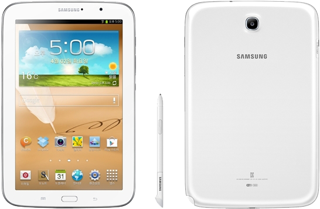

삼성 갤럭시 노트 8.0
1. 외관

삼성전자가 2013년 2월, MWC 2013에서 공개한 안드로이드 태블릿 컴퓨터.
2. 사양
| 프로세서 | 삼성 엑시노스 4412 SoC. ARM Cortex-A9 MP4 1.6 GHz CPU, ARM Mali-400 MP4 533 MHz GPU | ||
| 메모리 | 2 GB LPDDR2 SDRAM, 16 / 32 GB 내장 메모리, micro SDXC (최대 64 GB 지원) | ||
| 디스플레이 |
8.0인치 WXGA(1280 x 800) RGB 서브픽셀 방식의 TFT-LCD (189 ppi) 멀티터치 지원 정전식 일체형 G1F 터치 스크린 |
||
| 네트워크 | 기본 | LTE Cat.3, HSPA+ 21Mbps, HSDPA & HSUPA & UMTS, GSM & EDGE | Wi-Fi 802.11a/b/g/n, 블루투스 4.0 |
| - | - | ||
| 카메라 | 전면 130만 화소, 후면 500만 화소 AF | ||
| 배터리 | 내장형 Li-lon 4600 mAh | ||
| 운영체제 | 안드로이드 4.1 → 4.2 (Jelly Bean) → 4.4 (KitKat) | ||
| 규격 | 135.9 x 210.8 x 7.95 mm, 338 g | ||
3. 상세
삼성전자의 펜 특화 라인업인 갤럭시 노트 시리즈의 태블릿 컴퓨터 모델이다.